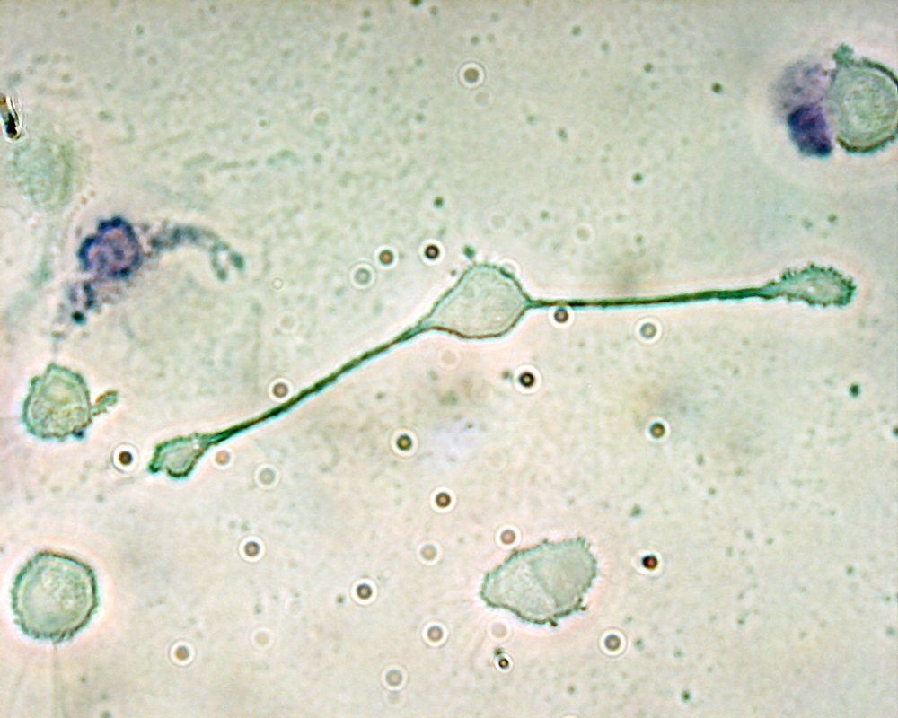

대식세포 (Macrophage)

쉽게 풀면
대식세포는 이름 그대로 '많이 먹는 세포'로, 몸에 들어온 세균이나 죽은 세포 찌꺼기를 통째로 삼켜 분해한다. 거의 모든 조직에 있으며, 간에서는 쿠퍼세포, 뇌에서는 미세아교세포처럼 위치에 따라 다른 이름으로 불린다.
왜 중요한가
감염, 염증, 조직 재생, 종양 면역 연구에서 핵심 세포로 다뤄진다. 대식세포 분극화, 경계 관련 대식세포 같은 세부 주제를 이해하려면 먼저 알아야 하는 개념이다.
어디에 있고 어떻게 생겼나
- 대식세포는 선천면역계의 백혈구로, 병원체, 암세포, 세포 잔해, 이물질을 삼켜 소화한다.
- 혈중 단핵구가 혈관을 떠나 조직에서 분화하며, 일부 조직 상주 대식세포는 출생 전에 자리 잡아 단핵구 공급 없이 유지된다. 질병이 있는 부위의 대식세포는 대부분 단핵구에서 유래한다.
- 거의 모든 조직에 있고 위치에 따라 이름이 다르다: 폐포 대식세포(폐), 쿠퍼세포(간), 미세아교세포(중추신경계), 비장 대식세포(비장), 골의 파골세포, 피부의 진피 대식세포와 랑게르한스 세포.
- 1884년 동물학자 엘리 메치니코프가 처음 확인했다.
맡은 기능
- 탐지: 톨유사수용체 같은 인식 수용체로 세균 성분(지질다당류, 핵산, 편모 단백질 등)을 알아본다.
- 식세포 작용과 살균: 삼킨 세균을 일산화질소 같은 활성 분자로 죽인다.
- 항원 제시와 염증 개시: 항원 조각을 MHC II에 실어 보조 T세포에 제시하고, IL-1, IL-6, TNF-α 같은 사이토카인과 케모카인으로 다른 면역세포를 불러 모으고 활성화한다.
- 죽어 가는 세포의 청소: 세포자멸사한 세포를 삼켜 치우는 작용(efferocytosis)을 맡으며, 다른 세포도 이 일을 한다.
- 상처 회복: 조직 재생과 상처 치유를 돕는다.
- 조직별 기능: 미세아교세포는 죽은 뉴런 제거, 비장 대식세포는 늙은 적혈구 제거를 맡는다.
연구에서 다루는 방식
- 염증을 촉진하는 M1형(고전적 활성화)과 염증을 줄이고 조직 회복을 돕는 M2형(대안적 활성화)으로 나누는 대식세포 분극화 틀이 널리 쓰이지만, 이 이분법에는 최근 의문이 제기되었다. M1은 아르기닌을 일산화질소로, M2는 아르기닌을 오르니틴으로 대사한다는 점이 대표적 구분이다.
- 같은 대식세포라도 조직에 따라 형태, 인식하는 병원체, 사이토카인 생산 수준이 다르므로 어느 조직의 어떤 집단인지 밝힌다.
- 질병 부위의 대식세포는 대부분 단핵구에서 유래하므로, 상주 대식세포와 유입된 대식세포를 구분해 해석한다.
논문에서는 이렇게 쓰입니다
실제 논문에서
이 용어를 직접 쓴 국내 논문 문장은 아직 모으지 못했다. 모이는 대로 출처와 함께 싣는다.
예시 문장
아래 예문은 용어의 쓰임을 보이려고 만든 것으로, 실제 논문 문장이 아니다.
종양 면역 연구에서 대식세포를 지표로 삼은 경우이다.
대식세포의 기능을 실험 지표로 측정한 문장이다.
조금 더 깊게 보면
건강한 성인 조직의 대식세포는 혈중 단핵구에서 분화하거나, 출생 전에 자리 잡아 단핵구 공급 없이 유지된다. 대식세포는 항원 조각을 MHC II 분자에 실어 보조 T세포에 제시하며, 사이토카인을 분비해 염증을 시작하게 한다. 염증을 촉진하는 M1형과 염증을 줄이고 조직 회복을 돕는 M2형으로 나누기도 하지만, 이 이분법에는 최근 의문이 제기되었다. 1884년 일리야 메치니코프가 처음 발견하고 이름 붙였다.
주의할 점
M1/M2 구분은 실제 대식세포의 다양성을 단순화한 모델이다. 또 조직 상주 대식세포는 미경험 T세포가 있는 림프절로 이동하지 않으므로, 주로 감염 부위에서 이미 활성화된 보조 T세포와 상호작용한다.
참고 문헌
- Saldana, J. I. (n.d.). Macrophages. Imperial College London.
- Wikipedia contributors. (n.d.). Macrophage. Wikipedia.
표의 기준값은 위 문헌에 따른 관례이고, 분야·학술지마다 기준이 다를 수 있다.